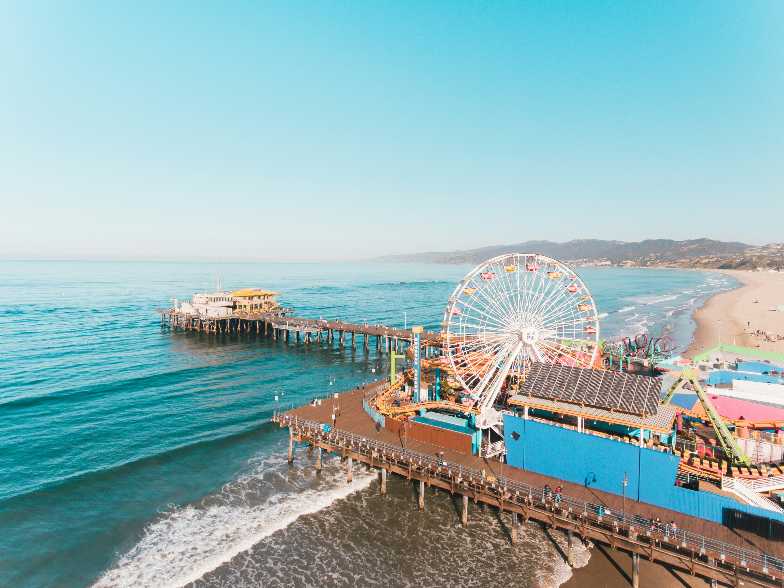
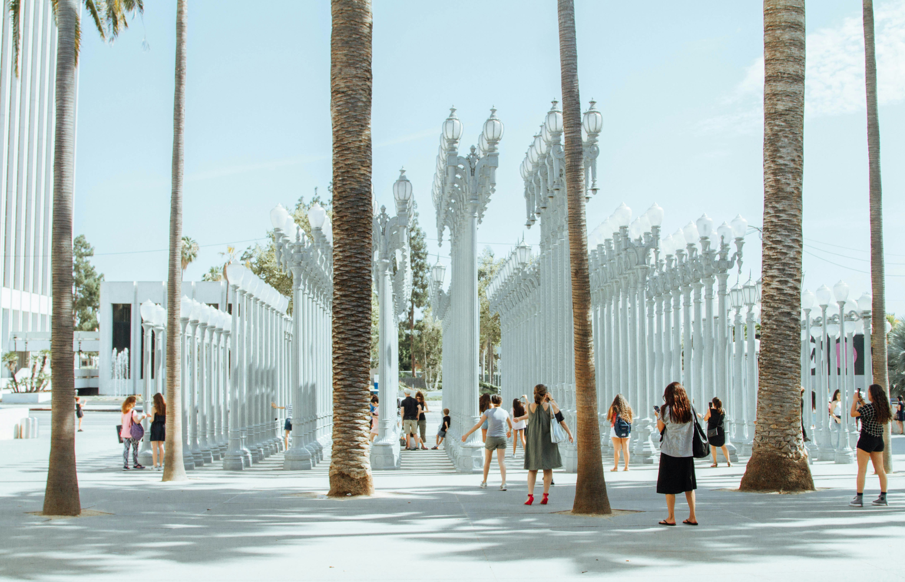

Landmarks
The Hollywood Sign
The Hollywood Sign is one of the most recognizable images of Los Angeles and California. Located on a steep hillside of Mt. Lee in southwestern Griffith Park, it faces toward Hollywood and the Los Angeles Basin, making it visible for miles. The best places to see the Hollywood Sign are Griffith Observatory and Hollywood & Highland. Before there was a Hollywood Sign, there was the birth of the movie industry and the growth of Los Angeles. The Hollywood “dream factory” became woven into the fabric of the region, and the Hollywood Sign symbolized the possibility. After half a century, the Sign had to be rebuilt, and this time it symbolized a resurgent Hollywood.
Griffith Observatory
Griffith Observatory is an icon of Los Angeles, a national leader in public astronomy, a beloved civic gathering place, and one of southern California’s most popular attractions. The Observatory is located on the southern slope of Mount Hollywood in Griffith Park, just above the Los Feliz neighborhood. Griffith Observatory is a unique hybrid of public observatory, planetarium, and exhibition space. When it opened in 1935, it was one of the first institutions in the U.S. dedicated to public science and possessed the third planetarium in the U.S.

Walk of Fame
The Hollywood Walk of Fame is a landmark that consists of more than 2,800 five-pointed terrazzo-and-brass stars embedded in the sidewalks along fifteen blocks of Hollywood Boulevard and three blocks of Vine Street in the Hollywood district of Los Angeles. The stars are monuments to achievement in the entertainment industry and bear the names of a mix of actors, filmmakers, musicians, inventors, businessmen, fictional characters, and more. The Walk of Fame is one of Los Angeles's most popular tourist attractions, receiving an estimated ten million annual visitors in 2010.
Walt Disney Concert Hall
The Concert Hall was conceived when Lillian B. Disney made an initial gift of $50 million to build an additional performance space on Los Angeles County land in honor of her late husband Walt Disney and his dedication to the arts. Home to LA Phil and the Los Angeles Master Chorale, Walt Disney Concert Hall is one of the most acoustically sophisticated concert halls in the world and provides both visual and aural intimacy through its exterior and interior design. Free tours are available of all The Music Center's theaters.
Beaches and Outdoor Recreation
Santa Monica Beach and Pier
Driving down the Pacific Coast Highway know you’ve arrived in Santa Monica, California when you see the iconic Ferris Wheel and Santa Monica Pier jutting into the inviting waters of the Pacific Ocean. Set at Santa Monica’s westernmost point, the Santa Monica Pier is a staple of this picturesque seaside community. The pier is one of the many things to do in Santa Monica. Packed with family-friendly activities, vibrant street performers, restaurants and shops, the Pier also offers stunning views and over a century of history. Constructed in 1909, the storied Santa Monica Pier was the first concrete pier on the West Coast. It quickly gained a reputation as the best fishing spot in Santa Monica.
Venice Beach
Venice Beach has almost 3 miles of coastline with 238 acres of beach and 3 parking lots with over 1200 spaces. Venice Beach is understood to include the promenade that runs parallel to the beach (Ocean Front Walk), Muscle Beach, the tennis courts, Skate Dancing plaza, numerous volleyball courts, the bike trail, and of course the beach itself. Venice Beach is one of the most interesting and popular sights in Los Angeles. Venice hosts artists, palm readers, bikini-clad roller skaters, belly dancers, vendors, street performers and of course bodybuilders. The area is great for people watching as well as shopping and eating.
Runyon Canyon
Since it's establishment as a public park in 1984, Runyon Canyon has served as an oasis from the rushed lifestyle of the big city. Runyon Canyon welcomes close to 2 million tourists & locals yearly. Runyon Canyon is a 160-acre park located on the eastern end of the Santa Monica Montains. Choose from one of the three hiking routes, Fuller Gate—Runyon Canyon Road (easy), the Star Trail (medium), or the Hero Trail (difficult) for priceless views of the Hollywood sign, the Sunset Strip and the LA Basin.

Parks and Outdoor Recreation
From Downtown LA to the coast, parks across the city invite you to enjoy the great outdoors any time of year. Whether you're casually strolling through an urban oasis or getting some exercise on a scenic hike, gorgeous weather and beautiful natural surroundings will be your constant companion. Echo Park Lake has walking trails and pedal boats, while Hancock Park La Brea is home to two of LA's most popular cultural attractions, the Los Angeles County Museum of Art (LACMA) and the La Brea Tar Pits & Museum.
Museums and Entertainment
The Getty Center
Driving down the Pacific Coast Highway know you’ve arrived in Santa Monica, California when you see the iconic Ferris Wheel and Santa Monica Pier jutting into the inviting waters of the Pacific Ocean. Set at Santa Monica’s westernmost point, the Santa Monica Pier is a staple of this picturesque seaside community. The pier is one of the many things to do in Santa Monica. Packed with family-friendly activities, vibrant street performers, restaurants and shops, the Pier also offers stunning views and over a century of history. Constructed in 1909, the storied Santa Monica Pier was the first concrete pier on the West Coast. It quickly gained a reputation as the best fishing spot in Santa Monica.
Los Angeles County Museum of Art
Los Angeles County Museum of Art (LACMA) is the largest art museum in the western United States, with a collection of 155,000 objects that illuminate 6,000 years of artistic expression across the globe. Committed to showcasing a multitude of art histories, LACMA exhibits and interprets works of art from new and unexpected points of view that are informed by the region’s rich cultural heritage and diverse population. LACMA’s spirit of experimentation is reflected in its work with artists, technologists, and thought leaders as well as in its regional, national, and global partnerships to share collections and programs, create pioneering initiatives, and engage new audiences. In addition to art exhibits, the museum features film and concert series.

Universal Studios
Universal Studios Hollywood is a film studio and theme park located in Universal City, California, United States, near Hollywood, Los Angeles. Owned by NBCUniversal and operated by Universal Destinations & Experiences, it is one of the oldest and most famous Hollywood film studios still in use. Its official marketing headline is "The Entertainment Capital of LA". It was initially created to offer tours of the real Universal Studios sets and is the first of many full-fledged Universal Studios theme park resorts located across the world.
Sporting Events and Live Performances
The Greater Los Angeles area is home to many professional and collegiate sports teams and has hosted many national and international sporting events. The metropolitan area has 12 major league professional teams. Los Angeles is home to a variety of sporting venues including the two National Historic Landmarks, the Los Angeles Memorial Coliseum and the Rose Bowl, the multi-purpose arenas, Crypto.com Arena and Intuit Dome, and the roof-covered SoFi Stadium. These venues are also used for concerts and live performances. There’s always something going on in LA.